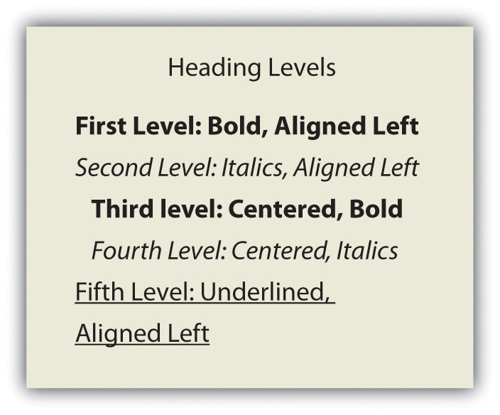

Chapter 9 "Designing" explores general and specific aspects of designing your written work, including margins, line spacing, indentation, alignment, headings, subheadings, fonts, visual text, images, charts, graphs, and text wrapping. In this section, you will learn about the document design requirements of two of the most common style sheets: those from the American Psychological Association (APA) and the Modern Language Association (MLA). (For more on citation and documentation formats from these and other style sheets, see Chapter 22 "Appendix B: A Guide to Research and Documentation".)
APA requires the following set order of pages with each listed page on the list starting on a new page. If your paper does not require one or more of the pages, skip over those pages, but maintain the order of the pages you do use.
A double-spaced title page should include the required information centered on the top half of the page. The title page information can vary based on your instructor’s requests, but standard APA guidelines include either the title, your name, and your college name or the title, your name, the instructor’s name, the course name, and the date.
Figure 10.1

Page numbers should be placed at the top, right margin one-half inch down from the top of the page. Across from the page number, flush left, include the title of the paper in a running head. If the title of the paper is lengthy, use an abbreviated version in the running head.
Make margins one inch on both sides and top and bottom.
Use double spacing with no additional returns. Before you decide where to place your headings, you have to decide how many levels of headings you will have. Typically, you will have two or three levels, but you might have as many as five levels. Keep in mind that the title does not count as a heading level, you should use the levels consistently, and you must have a minimum of two headings at each level. See Figure 10.2 for examples of formatting for different numbers of headings levels.
Figure 10.2

Use 12-point Times New Roman.
Indent the first word of each paragraph from five to seven spaces.
Double-space all text, including titles, subheadings, tables, captions, and citation lists.
Space once after punctuation within a sentence, such as commas, colon, and semicolons, and twice after end punctuation.
MLA requires the following set order of pages with each listed page on the list starting on a new page. If your paper does not require one or more of the pages, skip over those pages, but maintain the order of the pages you do use.
No title page is needed unless your instructor requests it. Instead of a title page, MLA requires that you double-space your name, instructor’s name, course name or number, and the date at the top left. Next, continuing to double space, center the title on the page and start your text under the title.
Figure 10.3

Page numbers should be placed at the top, right margin one-half inch down from the top of the page. Before the page number, use your last name in a running head.
Make margins one inch on both sides and top and bottom.
Use double spacing with no additional returns. Use the heading formats in Figure 10.4 for up to five headings. If you have only two headings, use only the first two formats and so on.
Typically, you will have two or three levels, but you might have as many as five levels. Keep in mind that the title does not count as a heading level, you should use the levels consistently, and you must have a minimum of two headings at each level.
Figure 10.4
Choose a font that is straight forward with no curly flairs or other “fancy” twists, such as Times New Roman or Arial. Use 12-point font.
Indent the first line of each paragraph one-half inch from the left margin by using the tab key (rather than spacing over).
Double-space all text, including titles, subheadings, tables, captions, and citation lists.
Leave only one space after all punctuation (both inside and at the end of sentences).
Read each guideline and identify it as a general guideline, an APA guideline, or an MLA guideline.